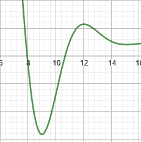

Capítulo 1 - Introdução
Neste capítulo visamos apresentar a linguagem Fortran (na versão Fortran 90) do zero, supondo pouca familiaridade com programação, mas algum conhecimento de métodos numéricos (não são obrigatórios, mas serão de grande ajuda para a compreensão de algumas motivações e exemplos). Ao longo deste capítulo vamos introduzir os conhecimentos necessários para construirmos um dos métodos numéricos mais simples e clássicos: o Método da Bisseção. E, para além de introduzirmos o ferramental, vamos construir um código para este método ao longo das seções, de forma que ao final do capítulo teremos uma implementação funcional do método em Fortran.
Características da linguagem
Do inglês, FORmula TRANslation system, a linguagem FORTRAN foi um avanço nas décadas de 60 e 70 na programação de computadores. Antes dela, o paradigma principal de codificação dos programas de computador era escrevê-loss diretamente em linguagem de montagem (Assembly), instruções que eram compreendidas de forma praticamente direta pelos computadores. Porém para nós humanos (que não somos computadores) é muito difícil e pouco transparente escrever fluxos e algoritmos tão próximos do metal. Visando incorporar abstrações que facilitariam a vida dos programadores, Foi criado o FORTRAN.
Nessa metade final do século XX, o surgimento do computador veio como ferramenta de cálculo para auxiliar na execução de métodos sofisticados e muito extensos que eram utilizados nos contextos da época, principalmente de guerra, engenharia, etc. Isso influenciou fortemente a maneira que a linguagem FORTRAN foi construída: pensada para fazer computação científica, e acelerar o progresso nestas áreas; e tem impactos que reverberam até as versões mais modernas da linguagem, devido a este processo histórico.
Algumas das filosofias principais da linguagem são:
- Ser estrita e eficiente para o que ela foi pensada
O que explica a grande quantidade de bibliotecas extremamente otimizadas para álgebra linear, implementação nativa de estruturas importantes da matemática a nível de engenharia como números complexos, arrays multi-dimensionais e especificação de precisão numérica, e ausência de estruturas comuns em linguagens de propósito geral (como recursividade e ponteiros, até a década de 90)
- Ser estável e retrocompatível
Muito tempo e esforço já foi colocado para construir programas robustos e de alta complexidade quando FORTRAN foi amplamente adotado pela comunidade científica: simulações, implementações de algoritmos para resolução de inúmeros problemas não-lineares, etc. Para que nenhum destes projetos se perdessem durante as atualizações da linguagem, FORTRAN é extremamente retrocompatível, de forma que todos os principais compiladores desenvolvidos até hoje são capazes de compilar programas escritos na década de 70 sem alterá-los em 1 linha de código (o que não ocorre, por exemplo, com Python 2 vs Python 3).
E para também certificar que os programas desenvolvidos sejam duráveis e pouco sucetíveis a erros numéricos (já que isso pode ser fatal numa engenharia naval, aeroespacial e afins), o compilador é muito rigoroso quanto ao uso das estruturas da linguagem, e não dá muito espaço para implementações exóticas e imprevisíveis (diferente da linguagem C, por exemplo). O design da sintaxe da linguagem segue esta mesma lógica.
Comparativo: FORTRAN 77 (fixed-form) vs FORTRAN 90 (free-form)
Até sua versão 77, FORTRAN rodava principalmente nos grandes centros de computação mantidos pelas universidades e pelo governo dos Estados Unidos. Estas máquinas comumente utilizavam cartões perfurados como forma de lerem e carregarem os programas desenvolvidos para a memória, como este da foto abaixo

Devido a isso, a sintaxe do FORTRAN 77 é conhecida como sendo de forma fixa, pois existe uma quantidade limite de caracteres por linha, além de um desígnio especial para cada faixa de caracteres na coluna. Você pode consultar mais detalhes em nossa página de FORTRAN77.
Como você deve imaginar, isto não é nada prático nos moldes atuais (e já na época era problemático).
Para endereçar este e alguns outros problemas, na versão FORTRAN 90 adotou-se uma sintaxe diferente,
a de forma livre. Nesta, removeu-se a limitação de colunas, aumentou-se a quantidade de caracteres
permitido nos nomes das variáveis e das funções, comentários podem ser feitos em qualquer trecho do
código utilizando !, dentre muitas outras convenções de programação que foram criadas com o aumento
em popularidade das linguagens C e Pascal, além da reformulação das estruturas físicas dos computadores
(telas, teclados, disquetes, sistemas operacionais, etc).
Nesta página, iremos trabalhar com o padrão FORTRAN 90. Vamos começar preparando o ambiente de execução dos nossos programas em Fortran.
Tópico 1: Compilação, arquivo fonte e arquivo executável
Antes de começarmos a programar, vamos aprender a como fazer um programa em Fortran ser executado. Vamos começar definindo alguns termos:
- Código-fonte: O código fonte é o arquivo escrito na linguagem de programação (no nosso cado, em Fortran). Ele contém as instruções do programa, porém o computador não sabe executar estes aquivos. Utilizaremos a extensão ".f90" nos nossos arquivos. OBS: programas escritos em FORTRAN 77 normalmente utilizam a extensão ".f". Segue um exemplo de código-fonte:
program cilindro
! Calcula a área de um cilindro.
!
! Declara as variáveis e constantes.
implicit none ! Requer que todas as variáveis sejam declaradas
integer :: ierr
real :: raio,altura,area
real , parameter :: pi = 3.14159
do
! Pergunta ao usuário o raio e a altura e lê os valores.
write (*,*) "Entre com o raio e a altura, 'q' para sair."
read (*,*,iostat=ierr) raio,altura
!
! Se o raio e a altura não puderam ser lidos da entrada, termina o programa.
if (ierr /= 0) stop "finalizando o programa"
!
! Calcula a área. O sinal ** significa "eleva a uma potência".
area = 2*pi*(raio**2 + raio*altura)
!
! Escreve as variáveis de entrada (raio, altura) e a saida (área) na tela.
write (*,"(1x,'raio=',f6.2,5x,'altura=',f6.2,5x,'area=',f6.2)") raio,altura,area
end do
end program cilindro
-
Compilador: O compilador é o programa responsável por traduzir as instruções do nosso código-fonte para instruções que o computador sabe executar. Este programa recebe como entrada o código-fonte, e gera um arquivo executável como saída. Utilizaremos o compilador "gfortran".
-
Arquivo executável: O arquivo executável é o arquivo que, efetivamente, irá rodar no computador, executando nosso programa. Este arquivo não é legível para nós, humanos, e por isso usamos as abstrações de uma linguagem de programação. Veja o que ocorre ao tentarmos abrir um arquivo binário com um leitor de texto:

Entendidos estes conceitos básicos, vamos fazer os 3 passos principais para sairmos de um código fonte a um binário executável:
Como instalar um compilador (gfortran)
No Linux
As instalações no Linux costumam ser bem diretas, e dependem um pouco da distribuição que você está utilizando
Se você estiver utilizando distribuições baseadas em Debian (Debian, Ubuntu, Mint, etc…), provavelmente você já tem o compilador pré-instalado. Para verificar, rode no terminal o comando:
Se o comando retornar a versão do compilador, então já existe uma instalação. Mas se retornar um erro, ou exibir uma versão antiga e você quiser uma mais nova, então você pode instalar o compilador (ou uma nova versão dele) usando:
E verificar se tudo ocorreu corretamente verificando a versão que foi instalada:
Se você usa uma distribuição Linux baseada em RPM (Red Hat Enterprise Linux, CentOS, Fedora, openSUSE), use
Ou, caso esteja utilizando Fedora 22 e Red Hat Enterprise Linux 8, utilize
Por fim, se estiver usando alguma distribuição baseada em Arch (Arch Linux, EndeavourOS, Manjaro, etc…), use
No Windows
No caso de querer compilar no Windows, você irá instalar um programa que irá ofertar um terminal que funciona de forma bem parecida com os terminais do Linux, mas adaptado para o Windows: o MSYS2.
Baixe o programa no link do projeto acima e siga as instruções do instalador. Terminada a instalação, você deverá ter acesso à várias shells do MSYS2: MSYS2 MSTS, MSYS2 MINGW64, MSYS2 CLANG64, etc. Abra a MSYS2 MINGW64
Nela, você irá instalar a coleção de compiladores GCC utilizando o comando:
Confirme a instalação digitando Y e aguarde. Terminada a instalação, feche
e abra novamente a shell MINGW64. Se tudo ocorreu corretamente, ao digitar
no terminal o comando:
Será exibida uma mensagem informando nome do pacote, versão e Copyright. Isso indica que a instalação foi bem sucedida. Os arquivos do caminho padrão se encontram em C:\msys64\home\<nome_do_seu_usuario>. Colocar os arquivos de código-fonte fortran neste caminho facilita a compilação, mas é possível utilizá-los de qualquer pasta do computador.
referência das instruções de instalação (em inglês)
Como compilar um código-fonte utilizando o compilador
Instalado o compilador, e com o código-fonte em mãos (isto é, no diretório no qual iremos rodar o comando, normalmente a home do usuário), podemos compilar o arquivo com:
Se salvarmos o programa apresentado no início desse tópico, que calcula a área de um cilindro, como "cilindro.f90", podemos fazer:
E teríamos um arquivo binário chamado cilindro para executar no Linux.
A depender do sistema, este arquivo receber uma extensão específica, como .exe
para executáveis em Windows.
Flags de Compilação
(flags)[https://gcc.gnu.org/onlinedocs/gfortran/Option-Summary.html]
Executando o arquivo executável gerado pela compilação
Para executar um binário, fazemos
Do nosso exemplo anterior:
E temos uma possível execução:
Entre com o raio e a altura, 'q' para sair.
1
2
raio= 1.00 altura= 2.00 area= 18.85
Entre com o raio e a altura, 'q' para sair.
q
STOP finalizando o programa
Tópico 2: Estrutura básica de um programa, print simples, variáveis e operações básicas.
Para começarmos a escrever um programa em Fortran, basta criarmos um arquivo novo em branco, e salvá-lo com a extensão ".f90".
Todo programa válido em Fortran precisa ter um bloco "program", com o nome do programa. Dentro deste bloco, temos nosso código principal a ser executado. Vamos iniciar fazendo um programa clássico ao começarmos a aprender uma nova linguagem de programação: Um programa que mostra "Olá mundo!" (ou "Hello world!") na tela e termina sua execução.
Compilando e executando este programa, o programa imprime na
tela "Olá mundo" e termina. O nome que segue a palavra chave
program é o nome do programa, e o bloco é terminado
por end program.
O comando print utiliza um primeiro argumento, que
é a formatação, e em seguidas as informações a serem mostradas.
Como não queremos nenhuma formatação específica para nossos dados,
usamos * como primeiro argumento, e em seguida a
string "Olá mundo!".
Tópico 2.1: Variáveis
Um dos conceitos mais básicos de programação são as variáveis. Elas são áreas de memória que guardam algum valor. Fortran é uma linguagem fortemente tipada, ou seja, para declaramos e usarmos uma variável precisamos, primeiro, indicar qual o tipo dessa variável (diferente de Python, por exemplo, que é fracamente tipada). Nativamente, existem 5 tipos de variáveis em Fortran:
integer- para valores inteiros, positivos ou negativosreal- para valores em ponto-flutuante (números fracionários)complex- para valores complexos, consistindo de uma parte real e uma parte imagináriacharacter- para texto em gerallogical- para valores verdade (verdadeiro ou falso)
Para declaramos uma variável usamos a sintaxe tipo ::
nome , onde tipo é o tipo da variável e
nome é o nome da variável. Por exemplo, se quisermos
declarar 2 variáveis reais x e y,
fazemos:
Nomes de variável precisam começar por uma letra, e podem ter
letras, números e underscores " _". Não são aceitos
caracteres pontuados como "é", "ã", "ó", etc.
Variáveis do tipo logical trabalham com os valores
.true. e .false. . Alguns compiladores
podem permitir conversão implícita de valores inteiros para lógico
(i.e. assumir que 0 é falso e qualquer número inteiro diferente de
0 é verdadeiro), mas esse comportamento não é o padrão da
linguagem, não conte sempre com ele, e evite sempre que
possível.
Exemplos de declaração de variáveis para cada tipo:
program variaveis
implicit none
integer :: i
real :: distancia
complex :: frequencia
character :: inicial
logical :: eh_primo
i = 1
distancia = 1.41421356
frequencia = (1.0, -0.5)
inicial = "f"
eh_primo = .false.
end program variaveis
Por padrão, utilizamos letras minúsculas ao programar, mas a linguagem não é sensível a CaPiTaLiZaÇãO, então maiúsculas e minúsculas podem ser usadas para os tipos e nomes. Porém, por questões de organização do código, seja consistente quanto a isso ao longo do programa.
Perceba que a primeira instrução do nosso programa é um
implicit none, e é por um bom motivo: Devido a
influência e herança do Fortran 77, por padrão, variáveis que
começam pelas letras I,J,K,L,M,N são do tipo integer,
e variáveis começando pelas outras letras restantes do alfabeto são
do tipo real. Hoje em dia, não se é mais recomendado
usar essa tipagem implícita, que permaneceu apenas por motivos de
retrocompatibilidade (ser possível executar códigos-fonte antigos
utilizando compiladores mais novos, sem ter que alterar o código).
Para indicarmos que não utilizaremos este padrão de tipagem
implícita, incluímos a instrução implicit none no
começo do programa.
Precisão de Variáveis
A representação de valores reais, em Fortran, é feita utilizando ponto flutuante. Nesta forma de representação, os números possuem sua parte fracionária armazenada em um tamanho finito de memória. Porém, existem diferentes padrões de armazenamento destes números, mas não iremos nos aprofundar neste assunto e abordaremos apenas 2 casos de nosso interesse: Float32 e Float64 - definidos no padrão IEE 754. Float32 é o padrão que reserva 32 bits para armazenamento de um número, e possui uma precisão de 6 a 9 dígitos decimais. Já o padrão Float64 é o padrão que reserva 64 bits para armazenamento do número, possuindo uma precisão maior: de 15 a 17 dígitos decimais.
Por padrão, Fortran utiliza Float32 para armazenar os
números reais no tipo de variável real. Caso queiramos
armazenar valores com maior precisão, usando o padrão Float64,
podemos utilizar um módulo disponibilizado pelos compiladores mais
recentes de Fortran (2003/2008 em diante): o
iso_fortran_env. Neste módulo, temos a definição de
várias constantes, sendo algumas delas as de definição de precisão
- conhecidas como "kind parameters".
Para declararmos uma variável real com 64 bits de precisão,
importamos o módulo e declaramos a variável como
real(real64) :
Essa informação é expressamente relevante para computações de alta precisão. Se quisermos representar valores literais em Float64, colocamos "_real64" no final do valor. Veja a diferença na precisão de representação do número de Euler:
program euler
use, intrinsic :: iso_fortran_env
implicit none
real :: v1
real(real64) :: v2
v1 = exp(1.0)
v2 = exp(1.0_real64)
print *, v1
print *, v2
end program euler
E temos v1 = 2.71828175 e v2 =
2.7182818284590451. No primeiro caso, temos erro no 7º
dígito, e no segundo apenas no 16º dígito. Note que foi preciso
chamar a função exp(x) (que retorna ) passando como
argumento um valor de 64 bits, para que ele calculasse uma resposta
com 64 bits de precisão. Lembre-se disso e tome cuidado para não
acabar armazenando, por engano, um resultado gerado por precisão
simples em uma variável de precisão dupla. No mesmo exemplo:
program euler
use, intrinsic :: iso_fortran_env
implicit none
real(real64) :: v3
v3 = exp(1.0)
print *, v3
end program euler
Onde v3 = 2.7182817459106445 parece ser um valor
com precisão maior, por estar em uma variável que é capaz de
representar números com mais precisão, mas cujo o conteúdo é
resultado de uma operação em precisão simples (ainda há erro no 7º
dígito da constante).
Tópico 2.2: Operações Básicas
Assim como muitas outras linguagens, Fortran vem com alguns operadores aritméticos básicos, tabelados abaixo em ordem de precedência:
| Operador | Operação | |
|---|---|---|
| ** | Exponenciação | |
| * | Multiplicação | |
| / | Divisão | |
| + | Adição | |
| - | Subtração |
Muito cuidado com a precedência dos operadores ao colocar expressões matemáticas grandes no seu código! Principalmente se elas envolvem frações: a expressão pode acabar calculando uma expressão diferente da pretendida. Por exemplo, se quisermos calcular uma média simples entre 3 números, ao escrever:
Temos como resultado 9, e não 6, pois
quem tem a precedência maior é a divisão, então primeiro é avaliado
5 / 2 e depois são feitas as somas. Para alterar
precedência de operações, envolvemos a expressão com parênteses -
que possuem a maior precedência entre os operadores:
E agora temos o comportamento esperado. Outro detalhe curioso no
trecho de código anterior é que a expressão foi avaliada como igual
a 9, e não 9.5 como esperaríamos da
aritmética usual. Isto ocorre por outra característica importante
da linguagem: operações entre inteiros geram inteiros,
operações com reais geram reais. Números reais são
representados com ponto decimal, ainda que sua parte decimal
seja toda zero. Essa regra explica o porquê de
ser avaliado como 2 , e
ser avaliado como 2.50000000 . Portanto, cuidado
também com os tipos das variáveis que você estiver
operando e com a formatação dos números.
Comentários
Apesar de não ser um operador, vamos aproveitar o final desta
seção para falar de comentários. Linhas de comentários são
iniciadas por !, e servem para escrever texto que não
será interpretado pelo programa. Comentários são úteis para
documentar o que está sendo feito no programa e para guiar as
pessoas que forem ler o código-fonte.
program comentarios
implicit none
! Esta linha será ignorada pelo compilador, escreva o que quiser
real :: alpha ! Coeficiente do termo linear
real :: beta ! Coeficiente do termo não-linear
real :: x ! Variável de entrada
real :: y
alpha = 3.0
beta = 1.0
x = 1
! Calculando a relação y(x)
y = (alpha * x) + (beta * x * x)
print *, y
end program comentarios
Não faça comentários em excesso, pois comentários demais podem prejudicar a legibilidade do código, mas também evite deixar códigos totalmente não comentados, já que você pode não se lembrar o que cada linha faz ao revisitar o código no futuro. Uma dica para achar esse equilíbrio é escrever bons nomes de variáveis e funções, que sejam autodescritivos e dispensem comentários, quando possível. Caso você queira adaptar uma fórmula diretamente, querendo manter a notação original, você pode comentar as variáveis ou a fórmula referenciada por exemplo.
Tópico 3: Funções e Módulos
Este é um dos tópicos mais complexos, mas também um dos mais relevantes. Leia com calma e, se preciso, pare, rode e mude o código. Leia mais de uma vez.
Tópico 3.1: Funções
Funções são um dos objetos mais explorados e utilizados na matemática, e não será diferente para nós. No contexto de programação, funções trazem modularidade e organização ao código, permitindo que um trecho de código possa ser reutilizado em diferentes locais do programa, ou até exportado para outros programas que venhamos futuramente desenvolver.
A sintaxe para declaração de uma função em Fortran segue um padrão como o seguinte:
function nome_funcao(arg1, arg2) result(var_result)
implicit none
tipo1, intent(in) :: arg1
tipo2, intent(in) :: arg2
tipo3 :: var_result
! Corpo da função
return
end funtion nome_funcao
Vamos destrinchar cada parte. A declaração é feita em bloco,
assim como vimos anteriormente ao criarmos o programa principal com
program. Ou seja, começamos a declaração com
function nome_funcao e terminamos com end
function nome_funcao. Na frente do nome da função, entre
parênteses, listamos os argumentos (ou variáveis, no jargão
matemático) da função. Podemos colocar quantos argumentos quisermos
(até mesmo nenhum). Nesse nosso exemplo, temos 2 argumentos:
arg1 e arg2. Imediatamente após,
colocamos a palavra reservada result e, em seguida e
entre parênteses, o nome da variável que terá o valor a ser
retornado no final da função, no caso do exemplo,
var_result. Um ponto a ser ressaltado: funções
retornam um, e apenas um, resultado. Mas não se desespere. É
possível organizar as informações de formar a fazer uma função
retornar mais de 1 valor, porém abordaremos este tópico em outro
momento. Por enquanto, trabalharemos com estruturas mais
simples.
Ao analisarmos o corpo da função notamos, inicialmente, temos
uma linha implicit none, que tem o comportamento
descrito ao final do tópico 2.1, e em seguida duas linhas de
declaração de variáveis. Estas variáveis são os argumentos da
função. Porém, diferente da declaração usual vista no tópico 2.1,
temos um trecho intent(in) no meio da declaração. A
instrução intent declara quais operações (escrita e
leitura) serão feitas em uma variável. Quando colocamos
intent(in) na declaração da variável, estamos dizendo
que esta variável será apenas lida, mas não poderá ter seu valor
sobrescrito pela função. Essa instrução está certificando mais um
padrão de funções em Fortran: funções não devem alterar os
argumentos de entrada. Esse padrão previne comportamentos
inesperados (side effects) e facilita interpretação de
resultados.
Para vermos um exemplo que ilustra a importância da declaração
de intenção das variáveis, vamos abordar apenas mais um conceito e
estudar um caso. Para conseguirmos incorporar uma função em um
programa, podemos utilizar, ao final do programa, uma instrução
contains seguida da declaração da função. Sabendo
disso, vejamos um exemplo: Suponha que temos um vetor , e queremos calcular a norma do dobro desse vetor. Ou seja,
se temos o vetor , queremos a norma de . Vamos
construir uma primeira função para isso, não seguindo o padrão com
intent:
function norma_dobro(v1, v2) result(norma)
real :: v1
real :: v2
real :: norma
v1 = 2*v1
v2 = 2*v2
norma = ((v1**2) + (v2**2))**(1.0/2.0)
return
end function norma_dobro
Agora, vamos criar um programa e testar nossa função:
program calcula_norma
implicit none
real :: norma_calculada
real :: vec1 !1ª coordenada do vetor
real :: vec2 !2ª coordenada do vetor
vec1 = 1
vec2 = 1
norma_calculada = norma_dobro(vec1, vec2)
print *, norma_calculada
contains
function norma_dobro(v1, v2) result(norma)
real :: v1
real :: v2
real :: norma
v1 = 2*v1
v2 = 2*v2
norma = ((v1**2) + (v2**2))**(1.0/2.0)
return
end function norma_dobro
end program calcula_norma
Ao executarmos o nosso programa, temos como saída:
Que é a norma do vetor . A princípio, parece que está tudo bem, mas nossa função gerou um efeito colateral e não percebemos isso. Podemos verificar o que aconteceu printando as coordenadas antes e depois da chamada da função:
program calcula_norma
implicit none
real :: norma_calculada
real :: vec1 !1ª coordenada do vetor
real :: vec2 !2ª coordenada do vetor
vec1 = 1
vec2 = 1
print *, vec1
print *, vec2
norma_calculada = norma_dobro(vec1, vec2)
print *, norma_calculada
print *, vec1
print *, vec2
contains
function norma_dobro(v1, v2) result(norma)
real :: v1
real :: v2
real :: norma
v1 = 2*v1
v2 = 2*v2
norma = ((v1**2) + (v2**2))**(1.0/2.0)
return
end function norma_dobro
end program calcula_norma
E no resultado desse programa:
Podemos perceber que nossa função de cálculo de norma mudou os
valores do nosso vetor original, que não era nossa intenção
inicial. Isso ocorre pois alterações em variáveis passadas como
argumentos em funções refletem as alterações externamente. Vejamos
agora o que acontece quando declaramos a função usando
intent:
program calcula_norma
implicit none
real :: norma_calculada
real :: vec1 !1ª coordenada do vetor
real :: vec2 !2ª coordenada do vetor
vec1 = 1
vec2 = 1
print *, vec1
print *, vec2
norma_calculada = norma_dobro(vec1, vec2)
print *, norma_calculada
print *, vec1
print *, vec2
contains
function norma_dobro(v1, v2) result(norma)
real, intent(in) :: v1
real, intent(in) :: v2
real :: norma
v1 = 2*v1
v2 = 2*v2
norma = ((v1**2) + (v2**2))**(1.0/2.0)
return
end function norma_dobro
end program calcula_norma
E ao tentarmos compilar e executar este programa:
./main.f95:27:3:
27 | v1 = 2*v1
Error: Dummy argument ‘v1’ with INTENT(IN) in variable definition
context (assignment) at (1)
./main.f95:28:3:
28 | v2 = 2*v2
Error: Dummy argument ‘v2’ with INTENT(IN) in variable definition
context (assignment) at (1)
Nosso compilador não finalizou a compilação pois detectou uma
inconsistência: Declaramos que são apenas argumentos de
entrada, mas em seguida tentamos modificar o valor dessas
variáveis. Aí está a importância do uso do intent:
caso nós, programadores, acidentalmente façamos uma atribuição
indevida, seremos alertados pelo compilador de que estamos fazendo
algo que provavelmente não deveríamos estar fazendo.
Para contornar nosso problema da função
calcula_norma, podemos:
- Criar novas variáveis internas da função, que essas sim poderão ser modificadas, copiar o valor dos argumentos originais nestas variáveis e operar com ela; ou
- Usar os valores originais diretamente no cálculo da norma
Na primeira proposta, nossa função ficaria com a seguinte cara:
function norma_dobro(v1, v2) result(norma)
real, intent(in) :: v1
real, intent(in) :: v2
real :: coord1
real :: coord2
real :: norma
coord1 = v1
coord2 = v2
coord1 = 2*coord1
coord2 = 2*coord2
norma = ((coord1**2) + (coord2**2))**(1.0/2.0)
return
end function norma_dobro
Com a segunda proposta:
function norma_dobro(v1, v2) result(norma)
real, intent(in) :: v1
real, intent(in) :: v2
real :: norma
norma = (((2*v1)**2) + ((2*v2)**2))**(1.0/2.0)
return
end function norma_dobro
E, com qualquer uma dessas versões, nosso resultado final ao executar o programa será:
Evitamos, assim, alterações nos dados originais. Dois comentários valem ser feitos: Apesar de ter menos código, a segunda implementação da função é bem mais difícil de ser entendida do que a primeira implementação. Em programas mais complexos, isso pode vir a ser um problema para outros programadores que tentem entender o comportamento da função, e até mesmo para quem escreveu a função ao ler o próprio código futuramente. Procure fazer códigos compreensíveis e, quando preciso, comente linhas mais difíceis ou relevantes. Segundo ponto: colocar o bloco de funções abaixo do programa principal não é melhor maneira de organizar o seu código. A maneira ideal de se fazer esta organização é utilizando Módulos, que será nosso próximo assunto, no tópico 3.3.
Tópico 3.2: Funções Intrínsecas
Fortran já existe a muito tempo, e é utilizado para diversos fins. Porém, como várias delas acabaram por precisar de funções comuns entre elas, a linguagem já implementa algumas destas funções para nos poupar de ter que defini-las nós mesmos. Buscando por "Intrinsic functions in Fortran 90" na internet, você vai encontrar algumas relações/listas destas funções. Alguns dos exemplos de funções ofertadas são:
- Valor Absoluto -
ABS - Máximo -
MAX - Logaritmo Natural -
LOG - Exponencial -
EXP - Raiz Quadrada -
SQRT - Cosseno -
COS - Arco tangente -
ATAN - Conjugado Complexo -
CONJG, etc
Normalmente, as implementações destas funções são uma das melhores possíveis (geralmente são rápidas!). Então, quando for criar uma função simples pro seu código, veja se ela já é oferecida nativamente pela linguagem. Se sim, dê prioridade a implementação nativa.
Tópico 3.3: Módulos
Módulos, como o próprio nome sugere, trazem modularidade ao programa. Ao subdividirmos um grande programa em componentes menores, facilitamos a manutenção e a eventual reutilização desses componentes em outros programas. Dessa forma, funções que são utilizadas em vários programas diferentes só precisarão ser escritas uma vez e reutilizadas sempre que possível. Além disso, você só precisará alterar 1 trecho que código para aplicar a mudança em vários programas de uma só vez (em vez de fazer a alteração programa a programa).
A sintaxe da declaração de um módulo segue um padrão como o seguinte:
module nome_do_modulo
implicit none
contains
! Aqui começa o bloco de declaração de
! funções, variáveis, e o que mais quisermos
end module nome_do_modulo
E, para usarmos um módulo em um programa, incluímos uma linha
use nome_do_modulo logo abaixo da primeira linha do
programa. Para o nosso exemplo do tópico anterior, podemos criar um
módulo de normas, e teremos um programa reestruturado da seguinte
forma:
module normas
implicit none
contains
function norma_do_dobro(v1, v2) result(norma)
real, intent(in) :: v1
real, intent(in) :: v2
real :: coord1
real :: coord2
real :: norma
coord1 = v1
coord2 = v2
coord1 = 2*coord1
coord2 = 2*coord2
norma = sqrt((coord1**2) + (coord2**2))
return
end function norma_do_dobro
end module funcs
program calcula_norma
use normas
implicit none
real :: norma_calculada
real :: vec1 !1ª coordenada do vetor
real :: vec2 !2ª coordenada do vetor
vec1 = 1
vec2 = 1
print *, vec1
print *, vec2
norma_calculada = norma_do_dobro(vec1, vec2)
print *, norma_calculada
print *, vec1
print *, vec2
end program calcula_norma
Desta forma, agrupamos funções parecidas, ou de mesmo contexto, sem misturá-las com todas as outras funções do código. Além disso, veremos posteriormente como módulos podem ser importados e exportados entre diferentes programas, ao declará-los em arquivos separados e usá-los em nossos programas.
Tópico 4: Estruturas Condicionais: IF - THEN - ELSE
Já sabemos como montar um programa que executa do começo ao fim de acordo com um procedimento inicialmente bem determinado. Mas e se o comportamento do programa puder variar no meio da execução, dependendo da entrada fornecida? Não saberemos de antemão como o programa irá executar, mas podemos preparar o código para fazer as decisões em tempo de execução. Para fazermos isso, vamos ver como funcionam os desvios condicionais.
Tópico 4.1: Operadores Lógicos
Vimos anteriormente operadores aritméticos (+, -, *, etc) e como
operam valores numéricos. Mas, quando a álgebra em questão é a
álgebra de Boole, precisamos de novos operadores que lidam com os
valores verdade .true. e .false..
Para formarmos expressões lógicas, podemos utilizar os operadores:
| Operador | Operação |
|---|---|
| == | Verifica se os 2 operandos são iguais |
| /= | Verifica se os 2 operandos são diferentes |
| > | Verifica se o operando à esquerda é maior que o da direita |
| < | Verifica se o operando à esquerda é menor que o da direita |
| >= | Verifica se o operando à esquerda é maior ou igual ao da |
| <= | Verifica se o operando à esquerda é menor ou igual ao da direita |
Estes operadores irão retornar valores .true. ou
.false., e podemos operar estes valores com os
operadores booleanos:
| Operador | Operação |
|---|---|
| .and. | Realiza um "E" lógico |
| .or. | Realiza um "OU" lógico |
| .not. | Realiza um "NÃO" lógico |
Com isso, podemos fazer alguns testes como: Se um certo valor é maior que 0, se 2 valores são iguais, etc.
Tópico 4.2: Comando IF-THEN-ELSE
Agora que sabemos como montar e comparar expressões lógicas, vamos usá-las com o comando IF-THEN-ELSE. A sintaxe do comando é:
if (expressao_logica) then
! Código a ser executado se a expressão for verdadeira
else
! Código a ser executado se a expressão for falsa
end if
O trecho else pode ser omitido, caso não haja
nenhum caso explícito para a condição falsa. E com isso,
conseguimos implementar várias funções que são definidas por parte,
como:
Função Valor Absoluto
function absoluto(x) result(y)
real, intent(in) :: x
real :: y
y = x
if (x < 0) then
y = -y
end if
return
end function absoluto
Função de Heaviside
function heaviside(x) result(y)
real, intent(in) :: x
real :: y
if (x >= 0) then
y = 1
else
y = 0
end if
return
end function heaviside
E assim por diante. Dica de programação: evite colocar muitos IF's aninhados uns dentro dos outros, pois isso costuma dificultar a leitura do código. Evite também colocar expressões muito longas no teste do IF, e tome cuidado com a precedência das operações (use parênteses, na dúvida). Aqui um exemplo de um bloco difícil de entender devido a IF's aninhados:
real, intent(in):: a
real, intent(in):: b
real, intent(in):: p
if (p >= a) then
if (p <= b) then
if (p == (a+b)/2 ) then
print *, "p está no intervalo e é ponto medio"
else
if (p > (a+b)/2) then
print *, "p está no intervalo, e está mais próximo de", b
else
print *, "p está no intervalo, e está mais próximo de", a
end if
end if
else
print *, "p está fora do intervalo, e depois de", b
end if
else
print *, "p está fora do intervalo, e antes de", a
end if
Perceba que você precisa manter os estados lógicos na sua cabeça
para acompanhar a execução. Para resolver estes problemas,
geralmente aplicamos uma de duas técnicas: Inversão Lógica ou
Extração em Função. Na primeira, usamos o teste lógico inverso
combinados com return, de forma que daquele trecho em
diante, sabemos que não estamos mais naquele caso. O segundo método
consiste em extrair subtestes em funções separadas, que realizam a
lógica internamente, e apenas chamar estas funções no nosso bloco
de IF. Veja como fica o código acima utilizando a primeira
técnica:
real, intent(in):: a
real, intent(in):: b
real, intent(in):: p
if (p < a) then
print *, "p está fora do intervalo, e antes de", a
return
end if
if (p > b) then
print *, "p está fora do intervalo, e depois de", b
return
end if
if (p == (a+b)/2 ) then
print *, "p está no intervalo e é ponto medio"
return
end if
! Neste ponto, sabemos que p está no intervalo e não é ponto médio
if (p > (a+b)/2) then
print *, "p está no intervalo, e está mais próximo de", b
else
print *, "p está no intervalo, e está mais próximo de", a
end if
return
Bem melhor de acompanhar, não é? Usando a segunda técnica
poderíamos, por exemplo, extrair o bloco que testa se
p está dentro do intervalo em uma função, e
verificar as outras propriedades no nosso IF após chamar esta
função. Caso queira, faça este segundo caso como exercício. Em
alguns outros cenários, esta segunda técnica pode fazer mais
sentido que a primeira, e vice versa.
Tópico 5: Repetição - Comando DO
Uma das maiores vantagens de se utilizar um computador para fazer contas, além da velocidade, é que, diferente de nós seres humanos, máquinas podem fazer tarefas repetitivas por longas horas sem enjoarem. Portanto, deixemos essas tarefas para o computador sempre que possível, poupando a nós, programadores humanos, dessa tarefa. E, para isso, podemos utilizar o comando DO.
A sintaxe do comando é:
Onde: iterador é a variável de iteração da
repetição, valor_inicial é o primeiro valor que o
iterador assumirá, valor_final é o último valor que a
variável pode assumir e passo é o incremento que será
feito a cada rodada de repetição. O exemplo mais comum na
matemática? Somatórios. Digamos que queremos fazer um somatório de
1 até n da expressão , como faríamos? Desta forma:
implicit none
real :: valor
integer :: k
integer :: n
valor = 0.0
n = 100
do k = 1, n, 1
valor = valor + 1.0/(k*k)
end do
print *, valor
E com 3 linhas fizemos 100 operações (o valor de n
neste exemplo), tal qual uma notação de somatório dispensa
escrevermos 100 somas por extenso. Algumas observações sobre este
trecho de código:
- Começamos iniciando a variável
valorcom 0.0, para garantir que não havia nenhum lixo de memória da variável recém-criada. Crie o hábito de inicializar variáveis antes de usá-las, especialmente em situações onde serão utilizadas para acúmulos. - O passo de iteração padrão do comando
doé 1. Logo, é equivalente escreverdo k = 1, n, 1oudo k = 1, n - Por fim, cuidado com a precisão das variáveis e seus tamanhos máximos e mínimos ao fazer muitas operações com elas, ou que envolvam números muito grandes, ou muito pequenos. Pode ser que você se depare com um resultado estranho mesmo com um código que deveria funcionar, devido ao fato dos números terem ficado grandes demais ou pequenos demais para o tamanho de representação suportado pelas variáveis
Para este último ponto, podemos utilizar o próprio trecho de
código acima para nos deparamos com problemas do tipo. O somatório
expresso neste trecho converge para , que é aproximadamente
igual a 1,6449340668482264. Vamos testar diferentes valores de
n no código, para ver a convergência:
- Para n = temos valor = 1.63498402
- Para n = temos valor = 1.64393485
- Para n = temos valor = 1.64472532
- Para n = temos valor = Infinity
A soma divergiu! Ora, mas nosso código estava coerente até e
a teoria diz que a soma converge. Qual foi o problema? as variáveis
k e valor são dos tipos
integer e real que, por padrão (em
FORTRAN 90), são de 32 bits! Quando k assume valores
próximos de , temos do denominador , que é
um número maior do que os representáveis em uma variável do
tipo Float32 (vide Tópico 2.1). Se representarmos nossas variáveis
com mais precisão (64 bits):
use, intrinsic :: iso_fortran_env
implicit none
real(real64) :: valor
integer(int64) :: k
integer(int64) :: n
valor = 0.0
n = 10**5_int64
do k = 1, n
valor = valor + 1.0_real64/(k*k)
end do
print *, valor
E agora sim temos saídas que continuam convergindo:
- Para n = temos valor = 1.6449240668982423
- Para n = temos valor = 1.6449330668487701
- Para n = temos valor = 1.6449339668472596
- Para n = temos valor = 1.6449340578345750
Detalhe: não é permitido andar com passos fracionários, como 0.5, apenas passos inteiros. Caso deseja iterar desta forma, é preciso construir uma iteração inteira que nos permita, internamente, representar a iteração fracionária. Por exemplo, se queremos avaliar uma expressão de 0 até 1 com passo 0.1, não é possível fazer
Mas podemos fazer:
Uma outra dica útil e que reflete nas possibilidades de uso do
comando do é que você pode andar com passos negativos,
como -1, desde que também sejam inteiros. No caso da nossa soma que
, pode ser útil que somemos dos menores números para os
maiores, com o objetivo de somar as contribuições das menores
parcelas da soma primeiro, e as maiores depois. Esta técnica pode
aumentar a precisão dos cálculos devido o não-desperdício de
precisão.
Desta forma, o mais adequado, para o nosso exemplo seria
somarmos começando de n e terminando em 1, já que
é o menor número da soma, e cada um anterior é ligeiramente maior.
Sendo assim, nosso somatório ficaria de trás pra frente:
use, intrinsic :: iso_fortran_env
implicit none
real(real64) :: valor
integer(int64) :: k
integer(int64) :: n
valor = 0.0
n = 10**5_int64
do k = n, 1, -1
valor = valor + 1.0_real64/(k*k)
end do
print *, valor
E conseguimos ver o impacto na precisão ao comparamos os casos de e em ambas as abordagens:
Primeira abordagem:
- Para n = temos valor = 1.6449340578345750, erro absoluto da aproximação = 9.0136513808403151E-009
- Para n = temos valor = 1.6449340578345750, erro absoluto da aproximação = 9.0136513808403151E-009
Segunda abordagem:
- Para n = temos valor = 1.6449340568482265, erro absoluto da aproximação = 9.9999999392252903E-009
- Para n = temos valor = 1.6449340658482263, erro absoluta do aproximação = 1.0000000827403710E-009
E observamos que não continuamos convergindo utilizando a primeira abordagem, enquanto na segunda sim.
OBS: Existem formas muito mais eficientes de se aproximar , o exemplo acima é meramente didático.
Tópico 6: Subrotinas
Neste tópico abordaremos o último assunto antes de partirmos para nossa construção e implementação do Método da Bisseção. No tópico 3 abordamos funções e módulos, e vimos que uma das características padronizadas das funções é que elas não alteram os argumentos de entrada. E para usar livremente os valores dos argumentos de entrada, criamos variáveis auxiliares dentro do corpo da função para armazenarem cálculos intermediários. Porém nem sempre isso é viável ou desejado, e gostaríamos de alterar os valores passados como argumento. Vale lembrar também que funções retornam apenas 1 único valor. Para contornar estas limitações de uso, temos as Subrotinas.
Subrotinas possuem comportamento e estrutura muito parecidos com funções. A sintaxe para declaração de uma subrotina é:
subroutine nome_subrotina(arg1, arg2, arg3)
implicit none
tipo1, intent(in) :: arg1
tipo2, intent(inout) :: arg2
tipo3, intent(out) :: arg3
! Corpo da subrotina
return
end subroutine
Que é muito semelhante a declaração de uma função, mas com algumas diferenças:
- Não há
resultno cabeçalho, pois subrotinas não retornam valores. Neste caso, é preciso passar como argumento a(s) variável(eis) onde serão escritos os valores de retorno - Os argumentos não necessariamente são apenas para leitura
(
intent(in)), mas podem ser pra leitura e escrita (intent(inout)) ou apenas escrita (intent(out)) - Subrotinas são chamadas por
call nome_subrotina, e não apenas o nome do procedimento, como é o caso das funções
Tal qual nas funções, podemos ter quantos argumentos quisermos. No exemplo, temos 3 argumentos na rotina. Para exemplificar os conceitos acima, vamos estruturar uma subrotina que resolva o seguinte problema: dado dois números consecutivos da sequência de fibonacci e , retornamos e .
subroutine fib(f1, f2)
integer, intent(inout):: f1
integer, intent(inout):: f2
integer :: prox
prox = f1 + f2
f1 = f2
f2 = prox
end subroutine fib
Destrinchando o código:
- Começamos definindo que nossos parâmetros da subrotina serão utilizados tanto para leitura quanto para escrita, além de definirmos todas as outras variáveis intermediárias que utilizaremos na subrotina.
- Calculamos utilizando e , e guardamos o resultado numa variável intermediária
- Atualizamos os valores de
f1ef2, e terminamos a subrotina
Perceba que, diferente das funções, não há return e
os parâmetros passados sofrem alteração. Podemos testar o código
chamando a subrotina múltiplas vezes e exibindo a sequência
gerada:
module funcs
implicit none
contains
subroutine fib(f1, f2)
integer, intent(inout):: f1
integer, intent(inout):: f2
integer :: prox
prox = f1 + f2
f1 = f2
f2 = prox
end subroutine fib
end module funcs
program test
use funcs
implicit none
integer :: f1
integer :: f2
integer :: i
f1 = 1
f2 = 1
do i = 1, 10
print *, f1, f2
call fib(f1, f2)
end do
end program test
E temos como saída:
E notamos que a cada chamada da subrotina as variáveis
f1 e f2 vão tendo seus valores alterados
e utilizados nas chamadas seguintes.
Tópico 7: Construindo o Método da Bisseção
Com as técnincas e estruturas apresentadas nos tópicos anteriores, agora temos o que precisamos para construírmos nossa primeira versão do Método da Bisseção. Esta primeira versão será melhorada/modificada nos tópicos seguintes, por motivos que abordaremos ao final desta sessão. Vamos começar relembrando/definindo a ideia algorítmica do método em alto nível de abstração. Em suma, o método da bisseção segue os seguintes passos:
- Começamos informando a função que queremos encontrar o 0, e o intervalo onde iremos começar a busca
- Calculamos o ponto médio do intervalo
- Verificamos se a função neste ponto é 0
- Se sim, retornamos este ponto e terminamos
- Se não, analisamos o sinal da função neste ponto e determinamos um novo intervalo
- Repetimos, a partir do passo 2, até um critério de parada (como um número máximo de passos), para evitarmos um loop infinito.
Vamos contruir este programa utilizando a seguinte abordagem:
começamos escrevendo as partes centrais do código primeiro, supondo
que dispomos de todas as estruturas intermediárias e funções necessárias.
Ou seja, vamos escrever o código usando, por exemplo, uma função "abc(x)"
sem termos definido "abc" ainda, e tendo concluído o código principal
definimos "abc" (pois se não o código não funcionará).
Tópico 7.1: Arquitetando o código
Vamos pensar nas estruturas a serem utilizadas em cada passo.
1. Começamos informando a função que queremos encontrar o 0, e o intervalo onde iremos começar a busca
- Neste primeiro passo, precisamos pensar em como forneceremos os dados de entrada. Não queremos que nosso programa seja específico para uma função, mas sim para um grande conjunto de funções. Vamos, portanto, fazer um módulo a parte do programa principal, que seja importado pelo programa e disponibilize essas funções quando necessárias. Para fins de teste, vamos declarar um polinômio como função neste módulo.
module funcoes
implicit none
contains
! Polinômio: x^3 - x - 2
function f(x) result(y)
real, intent(in) :: x
real :: y
y = x**3 - x - 2
end function f
end module funcoes
- Já o intervalo gostaríamos de ter maior liberdade de escolha,
pois podemos fazer várias escolhas de onde começar a busca. Vamos,
então, definir no programa as variáveis a serem utilizadas,
que nomearemos
aeb.
program main
use funcoes
use, intrinsic :: iso_fortran_env
implicit none
real(real64) :: resultado
real(real64) :: a = 1
real(real64) :: b = 2
end program main
- Por fim, percebendo que o método recebe como entrada um conjunto de valores e retorna como resultado um único valor (um tal que ), podemos modelar o método como uma função. Por questão de organização, vamos colocar o método num módulo próprio e usá-lo no programa principal. Vamos escolher, por conveniência, trabalhar com precisão dupla.
module metodos
use funcoes
implicit none
contains
function bissecao(a, b) result(raiz)
! Limite inferior do intervalo
real(real64), intent(in) :: a
! Limite superior do intervalo
real(real64), intent(in) :: b
! Valor de x tal que f(x) = 0
real(real64) :: raiz
end function bissecao
end module metodos
program main
use funcoes
use metodos
use, intrinsic :: iso_fortran_env
implicit none
real(real64) :: resultado
real(real64) :: a = 1
real(real64) :: b = 2
resultado = bissecao(a, b)
end program main
2. Calculamos o ponto médio do intervalo
Aqui criamos uma variável a mais em nossa função da bisseção e realizamos a média simples dos limites do intervalo para calcular o ponto médio. Para evitar reexibir todo o código, vamos mostrar apenas a função de bissecao, que será alterada:
function bissecao(a, b) result(raiz)
! Limite inferior do intervalo
real(real64), intent(in) :: a
! Limite superior do intervalo
real(real64), intent(in) :: b
! Valor de x tal que f(x) = 0
real(real64) :: raiz
! Ponto médio
real(real64) :: p_medio
p_medio = (a+b)/2
end function bissecao
3. Verificamos se a função neste ponto é 0.
4. Se sim, retornamos este ponto e terminamos
Estes 2 passos podem ser feitos por um teste condicional
function bissecao(a, b) result(raiz)
! Limite inferior do intervalo
real(real64), intent(in) :: a
! Limite superior do intervalo
real(real64), intent(in) :: b
! Valor de x tal que f(x) = 0
real(real64) :: raiz
! Ponto médio
real(real64) :: p_medio
p_medio = (a+b)/2
if (f(p_medio) == 0) then
raiz = p_medio
return
end if
end function bissecao
5. Se não, analisamos o sinal da função neste ponto e determinamos um novo intervalo
Diferente dos passos anteriores, "fazer a análise de sinal da função e determinar um novo intervalo" não é uma tarefa de poucas instruções. Porém, como o próprio algoritmo nos mostra, também não queremos colocar todo o trecho de código diretamente na função pois isso não deixa claro o que este grande conjunto de instruções faz. Para manter uma boa legibilidade e modularidade de código, vamos colocar esta etapa em uma subrotina. Faremos a especificação e ajustes referentes à subrotina após terminamos a construção da função principal.
function bissecao(a, b) result(raiz)
! Limite inferior do intervalo
real(real64), intent(in) :: a
! Limite superior do intervalo
real(real64), intent(in) :: b
! Valor de x tal que f(x) = 0
real(real64) :: raiz
! Ponto médio
real(real64) :: p_medio
p_medio = (a+b)/2
if (f(p_medio) == 0) then
raiz = p_medio
return
else
call novo_intervalo(a, b)
end if
end function bissecao
6. Repetimos, a partir do passo 2, até um critério de parada (como um número máximo de passos), para evitarmos um loop infinito.
Para repetir estes passos, envolvemos o trecho do programa em um laço do, criando uma variável de
iteração. Quanto ao critério de parada, é de bom tom que seja um parâmetro que possa ser escolhido por execução.
Logo, receberemos esta informação como argumento de chamada da função.
function bissecao(a, b, n_passos) result(raiz)
! Limite inferior do intervalo
real(real64), intent(in) :: a
! Limite superior do intervalo
real(real64), intent(in) :: b
! Nº máximo de passos
integer, intent(in) :: n_passos
! Valor de x tal que f(x) = 0
real(real64) :: raiz
! Ponto médio
real(real64) :: p_medio
! Variável do loop
integer :: i
do i = 1, n_passos
p_medio = (a+b)/2
if (f(p_medio) == 0) then
raiz = p_medio
return
else
call novo_intervalo(a, b)
end if
end do
end function bissecao
E nossa implementação está quase pronta, a menos da especificação da subrotina novo_intervalo.
Especificação do item 5
Nossa subrotina irá receber um par que representa o intervalo atual da busca e retornará um novo par . Portanto, note que a maneira como estamos chamando a subrotina em nossa função de bisseção não é boa, pois a, b são parâmetros da função bissecao. E como vimos na Seção 3, não devemos alterar parâmetros passados para uma função. Vamos começar, portanto, mudando nossa função de bisseção para trabalhar com variáveis cópias dos parâmetros originais
function bissecao(a, b, n_passos) result(raiz)
! Limite inferior do intervalo
real(real64), intent(in) :: a
! Limite superior do intervalo
real(real64), intent(in) :: b
! Variável LOCAL do limite inferior do intervalo
real(real64) :: inf
! Variável LOCAL do limite superior do intervalo
real(real64) :: sup
! Nº máximo de passos
integer, intent(in) :: n_passos
! Valor de x tal que f(x) = 0
real(real64) :: raiz
! Ponto médio
real(real64) :: p_medio
! Variável do loop
integer :: i
inf = a
sup = b
do i = 1, n_passos
p_medio = (inf+sup)/2
if (f(p_medio) == 0) then
raiz = p_medio
return
else
call novo_intervalo(inf, sup)
end if
end do
end function bissecao
Agora que estamos chamando a subrotina propriamente, vamos definir melhor sua lógica interna.
- Primeiro calculamos o ponto médio do intervalo (
c) - Calculamos
faplicada no ponto médio efaplicada no limite inferior do intervalo (inf) - Se
faplicada emctiver o mesmo sinal defaplicada eminf, o novo intervalo é (c, sup) - Caso contrário, então sabemos que
faplicada emctem o mesmo sinal quefaplicada emsup, e o novo intervalo é (inf, c)
5.1 Calcular o ponto médio do intervalo
subroutine novo_intervalo(inf, sup)
real(real64), intent(inout) :: inf
real(real64), intent(inout) :: sup
real(real64) :: c
c = (inf+sup)/2
end subroutine novo_intervalo
5.2 Calcular f(inf) e f(c)
subroutine novo_intervalo(inf, sup)
real(real64), intent(inout) :: inf
real(real64), intent(inout) :: sup
real(real64) :: c
real(real64) :: sinal_f_inf
real(real64) :: sinal_f_c
real(real64) :: novo_inf
real(real64) :: novo_sup
c = (inf+sup)/2
f_em_inf = f(inf)
f_em_c = f(c)
end subroutine novo_intervalo
5.3 Testar sinal e determinar um novo intervalo
subroutine novo_intervalo(inf, sup)
real(real64), intent(inout) :: inf
real(real64), intent(inout) :: sup
real(real64) :: c
real(real64) :: sinal_f_inf
real(real64) :: sinal_f_c
real(real64) :: novo_inf
real(real64) :: novo_sup
c = (inf+sup)/2
f_em_inf = f(inf)
f_em_c = f(c)
sinal_f_inf = sign(1.0_real64, f_em_inf)
sinal_f_c = sign(1.0_real64, f_em_c)
if (sinal_f_inf == sinal_f_c) then
novo_inf = c
novo_sup = sup
end if
inf = novo_inf
sup = novo_sup
end subroutine novo_intervalo
5.4 Determinar outro novo intervalo caso o primeiro teste tenha falhado
subroutine novo_intervalo(inf, sup)
real(real64), intent(inout) :: inf
real(real64), intent(inout) :: sup
real(real64) :: c
real(real64) :: sinal_f_inf
real(real64) :: sinal_f_c
real(real64) :: novo_inf
real(real64) :: novo_sup
c = (inf+sup)/2
f_em_inf = f(inf)
f_em_c = f(c)
sinal_f_inf = sign(1.0_real64, f_em_inf)
sinal_f_c = sign(1.0_real64, f_em_c)
if (sinal_f_inf == sinal_f_c) then
novo_inf = c
novo_sup = sup
else
novo_inf = inf
novo_sup = c
end if
inf = novo_inf
sup = novo_sup
end subroutine novo_intervalo
Tópico 7.2: Código Final
Juntando os trechos finais de código desenvolvidos acima temos a nossa primeira versão do programa:
module funcoes
use, intrinsic :: iso_fortran_env
implicit none
contains
! Polinômio: x^3 - x - 2
function f(x) result(y)
real(real64), intent(in) :: x
real(real64) :: y
y = x**3 - x - 2
end function f
end module funcoes
module metodos
use funcoes
implicit none
contains
subroutine novo_intervalo(inf, sup)
real(real64), intent(inout) :: inf
real(real64), intent(inout) :: sup
real(real64) :: c
real(real64) :: sinal_f_inf
real(real64) :: sinal_f_c
real(real64) :: novo_inf
real(real64) :: novo_sup
c = (inf+sup)/2
sinal_f_inf = sign(1.0_real64, f(inf))
sinal_f_c = sign(1.0_real64, f(c))
if (sinal_f_inf == sinal_f_c) then
novo_inf = c
novo_sup = sup
else
novo_inf = inf
novo_sup = c
end if
inf = novo_inf
sup = novo_sup
end subroutine novo_intervalo
function bissecao(a, b, n_passos) result(raiz)
! Limite inferior do intervalo
real(real64), intent(in) :: a
! Limite superior do intervalo
real(real64), intent(in) :: b
! Nº máximo de passos
integer, intent(in) :: n_passos
! Valor de x tal que f(x) = 0
real(real64) :: raiz
! Ponto médio
real(real64) :: p_medio
! Variável LOCAL do limite inferior do intervalo
real(real64) :: inf
! Variável LOCAL do limite superior do intervalo
real(real64) :: sup
! Variável do loop
integer :: i
inf = a
sup = b
do i = 1, n_passos
p_medio = (inf+sup)/2
if (f(p_medio) == 0) then
raiz = p_medio
return
else
call novo_intervalo(inf, sup)
end if
end do
raiz = p_medio
end function bissecao
end module metodos
program main
use funcoes
use metodos
use, intrinsic :: iso_fortran_env
implicit none
real(real64) :: resultado
real(real64) :: a = 1
real(real64) :: b = 2
integer :: n_passos = 20
resultado = bissecao(a, b, n_passos)
print *, resultado
end program main
Testes
Rodando nosso programa para o polinômio de teste , começando pelo intervalo e iterando por 22 passos (valores acima na main) obtemos como saída:
E avaliando f(resultado) a saída é 4.2658294048258938E-006, que está próximo de 0 e portanto indica que a saída do programa está próxima da raiz do polinômio. Se aumentarmos o número de iterações fazendo n_passos = 50, o programa retorna:
E avaliando para esta saída f(resultado) obtemos -1.3322676295501878E-015, um resultado ainda melhor e que faz jus ao resultado teórico convergente: quanto mais passos, melhor a aproximação.
Vamos testar para uma outra função mais desafiadora? Troquemos o polinômio pela função
Observando o gráfico da função, sabemos que esta função possui raízes próximas do valor 10:

Vamos buscar um valor mais preciso para a raiz logo depois do 10 e antes do 12. Para isso, basta mudarmos nossa função f no módulo de funções:
function f(x) result(y)
real(real64), intent(in) :: x
real(real64) :: y
y = ((cos(x) * x**5) / exp(x)) + 1
end function f
E podemos utilizar como intervalo de chute inicial , ou seja, fazemos a = 10 e b = 12 no programa main. Com 50 passos temos que a raiz é:
f avaliada neste ponto é -1.7763568394002505E-015; temos uma ótima aproximação.
Fazer com que nosso algoritmo aceite uma função f externa qualquer não é trivial, logo estamos satisfeitos, por hora, com este procedimento de trocar a declaração de f explicitamente no código. Caso fique curioso sobre como é feita esta implementação mais genérica, ela envolve uso de uma estrutura ainda não apresentada: interface.
Tópico 8: Formatação de Saídas: WRITE
Até o momento utilizamos apenas a função print para exibirmos resultados em nossos códigos. Porém, caso queiramos mostrar saídas um pouco melhor elaboradas e formatadas, o uso da função print não é o mais adequado. Isso porque esta função foi criada para exibir resultados utilizando uma formatação específica, pensada na compatibilidade com antigas impressoras e dispositivos de saída utilizados nos anos 60 e 70.
Para utilizar uma formatação de saída personalizada, foi criada a função write, uma alternativa mais flexível que a print. A função print recebe como primeiro argumento onde será escrita a saída (quando passamos * indicamos que deve ser utilizada a saída padrão do sistema) e logo em seguida passamos todos os argumentos a serem impressos, separados por vírgulas. Já na função write, passamos entre parênteses onde será escrita a saída e qual será a formatação a ser utilizada, e então a lista de argumentos a serem impressos, separados por vírgulas.
Logo, a diferença maior está neste segundo argumento de formatação, chamados de "descritores de edição". Como eles funcionam? Bom, existe uma lista de formatadores aceitos que podem variar a depender do compilador sendo utilizado. Vamos utilizar a tabela da Fortran Wiki como referência:
w : o número exato de caracteres a serem utilizados
m : o número mínimo de caracteres a serem utilizados
d : o número de dígitos à direita do ponto decimal
e : o número de dígitos no expoente
| Tipo do dado | Descritores de Edição |
Outra opção |
|---|---|---|
integer |
Iw |
Iw.m |
real (notação decimal) |
Fw.d |
|
real (notação exponencial) |
Ew.d |
Ew.dEe |
real (notação científica ) |
ESw.d |
ESw.dEe |
real (notação de engenharia) |
ENw.d |
ENw.dEe |
logical |
Lw |
|
character |
A |
Aw |
| posicionamento horizontal | nX |
|
| posicionamento de tabulação | Tc |
TLc, TRc |
| posicionamento vertical | / |
Com isso, podemos formatar a atual saída do nosso programa da seguinte forma:
- Mostrar a string "Raiz encontrada: ", seguida de 12 espaços, seguidos do valor calculado para a raiz (resultado) com 15 casas depois da vírgula.
- Logo em seguida mostrar a string "Função avaliada nessa raiz: ", seguida de 1 espaço, seguido do valor f(resultado) com 15 casas depois da vírgula.
Usando os descritores da tabela acima, alteraremos então o final do nosso programa principal do tópico anterior para:
program main
use funcoes
use metodos
use, intrinsic :: iso_fortran_env
implicit none
real(real64) :: resultado
real(real64) :: a = 1
real(real64) :: b = 2
integer :: n_passos = 22
resultado = bissecao(a, b, n_passos)
write (*,'(A, 12X, F20.15)') 'Raiz encontrada: ', resultado
write (*,'(A, 1X, F20.15)') 'Função avaliada nessa raiz: ', f(resultado)
end program main
E a saída com e 20 passos:
Aumentando para 50 passos:
Trocando o descritor do segundo write de F20.15 para E22.15:
E podemos utilizar a formatação de saída que nos for mais conveniente. Atenção: note que o número que segue o E e o F dos descritores precisa levar em conta todos os caracteres exibidos no argumento de saída (incluindo sinais, pontos, o próprio "E", etc).
A saída "-0.133226762955019E-14" tem exatamente 22 caracteres. Caso colocássemos um número menor que 22 no descritor, a saída sairia mal formatada. Veja o que ocorre quando colocamos E20.15 :
Na dúvida, um tamanho maior que o necessário é melhor que um menor.
Tópico 9: Repetição: DO - WHILE
Para motivar a apresentação da próxima estrutura, notemos uma particularidade do uso do método e a forma como está implementado. Ao
procurar uma solução numérica, geralmente estabelece-se um critério de parada de acordo com uma tolerância sobre o erro da solução.
Porém, da maneira como implementamos o loop principal, nosso algoritmo roda um número fixo de iterações, fornecido como entrada
pelo usuário. Isso faz com que tenha que se chutar um valor de passos a serem executados que gere um erro menor que o esperado e,
caso isso não ocorra, recomeçar o algoritmo do início com um novo chute (agora melhor informado). Esta não é uma boa abordagem, e por
isso mudaremos nosso loop para definir o erro numérico enquanto critério de prosseguimento/parada, utilizando a estrutura DO WHILE.
O teste condicional deve ser uma expressão lógica (ou uma vaiável lógica, enfim, um valor lógico) que será checado a cada iteração.
Se o teste for verdadeiro (i.e. .true.), a iteração acontecerá. Quando for falso, o loop termina e a próxima instrução após o END DO
é executada.
No nosso problema, o método da bisseção, sabemos que a solução exata é 0. E, portanto, conseguimos calcular o quão distante está a solução numérica calculada em relação ao valor exato. Para isso, implementaremos as seguintes mudanças na função bissecao:
- Trocar o
n_passosporerro_tol(lembrando de fazer o mesmo no programa principal) - Trocar o loop fixo por um loop dinâmico em cima do
erro_tol
function bissecao(a, b, erro_tol) result(raiz)
! Limite inferior do intervalo
real(real64), intent(in) :: a
! Limite superior do intervalo
real(real64), intent(in) :: b
! Erro máximo tolerado
real(real64), intent(in) :: erro_tol
! Valor de x tal que f(x) = 0
real(real64) :: raiz
! Ponto médio
real(real64) :: p_medio
! Variável LOCAL do limite inferior do intervalo
real(real64) :: inf
! Variável LOCAL do limite superior do intervalo
real(real64) :: sup
! Variável do loop
integer :: i
inf = a
sup = b
p_medio = (inf+sup)/2
do while (abs(f(p_medio)) > erro_tol)
call novo_intervalo(inf, sup)
p_medio = (inf+sup)/2
end do
raiz = p_medio
end function bissecao
Fazendo erro_tol = 1e-12_real64 no programa principal e rodando o código, temos como saída:
E agora não é mais necessário o processo de tentativa e erro. É possível juntar as 2 abordagens e definir um limite máximo de iterações caso não se atinja a tolerância especificada (para evitar possíveis loops infinitos). Pode-se também envolver esta função numa sobrotina para retornar informações extras como número de passos realizados.
Para alguns outros problemas, onde a solução exata não é conhecida, poderíamos olhar para a diferença entre iterações subsequentes, por exemplo, para estimar convergência e colocar esta diferença como critério de parada do DO WHILE. As possibilidades são muitas, a variar do problema.